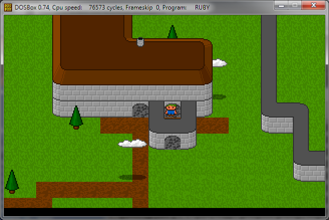
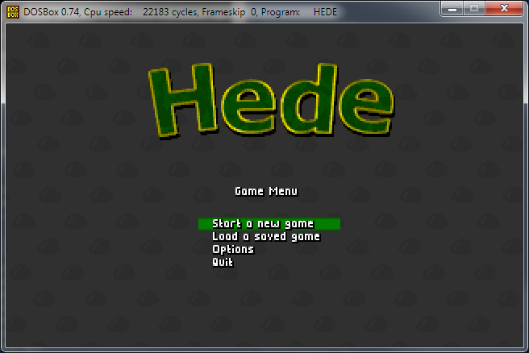
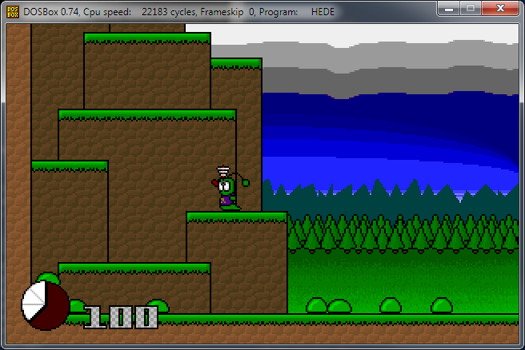
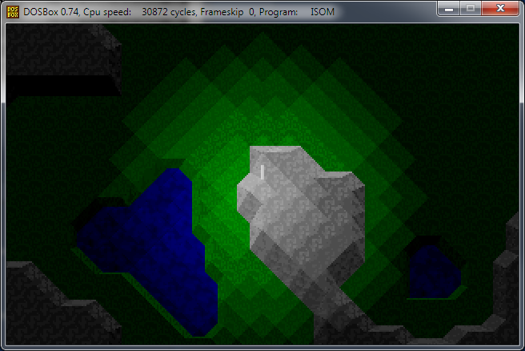
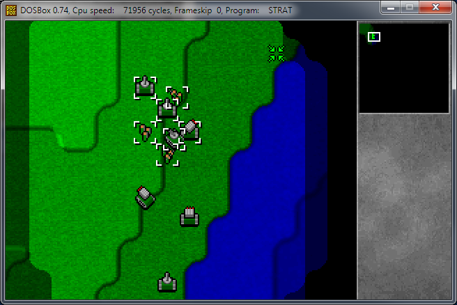

BitSeven logo

Way before Mojang, I named my "studio" BitSeven Productions. I even got a really cool domain for it
(bit7.com), which I later sold to some guy for 800 dollars.
3D1

Free-roaming wolfenstein type engine with mouse interaction for clicking items and opening doors. The entire
rightmost part of the screen works as an inventory. Purely an engine test and a learning experience. The walls
are bump-mapped, and the sky has a neat parallax effect.
Turbo

Over-the top side scrolling shooter. I used a lot of assembler in this one for the sprite rendering, and got
kinda disappointed when the game got slow anyway when there was a billion sprites at once.
IQ Ball 2
Me and a friend made a game called "IQ Ball", where all balls moved at once when you pressed a key, and you
had to get the goal ball safely to the goal. This was supposed to be a sequel.
Ruby

I tend to use the name "Rubylands" as a placeholder for almost all my RPGs, hoping it'll stick to one of
them. This was a free-scrolling JRPG type engine, complete with monster battles.
Ruby

Fight screen from the Ruby RPG. You could select options in the menu and attack the monsters, complete with
animations and damage popups. I never got as far as making it worthwhile to fight the monsters, but it looked
kinda cool.
HEDE 2 action shot

I made two games around the same character, called HEDE. This was a top-down game with plenty of particle
effects. There was five weapons, and you could kill monsters and pick up gold.
HEDE 2, title screen

The background is animated, the menu options all lead to "start game", and the logo was made in some
automatic 3d logo making program where you could set stuff like border thickness.
HEDE

The first game with the HEDE character in it. A platformer with guns! You could shoot the little slime
monsters, get hurt and die, and walk for a really long way before the level ended. The background graphics had
fake layered parallax scrolling.
RL X, title screen
Lots of time spent in photoshop, then compressing it down to 256 colors while making sure it looked gritty
and cool.
RL X

Tile based roguelike with line of sight and fancy lighting effects. I vaguely remember there being a fireball
spell and exploding barrel chain reactions in this, but I don't remember the controls.
ISOM

Isometric renderer test, combined with a random terrain generator. Lighting, height calculation, but no game
anywhere to be found. This was probably inspired by Populous.
RUBYLAND

First person tile based dungeon crawler attempt with variable floor/ceiling heights. It had an animated fire
texture, variable colored fog, and per-tile brightness. For some reason, this was made in VESA.
Howl

This was supposed to be a Megaman-type game. The character had each limb as an individually animated sprite,
and you could run and shoot, and even do wall slides. I spent a lot of time working on the shells getting
ejected from the gun.
STRAT

Very obviously inspired by Dune 2. I learned a lot about drawing tilesets that connect into each other in
this project. The minimap was fully functioning, but the AI was ridiculously stupid.